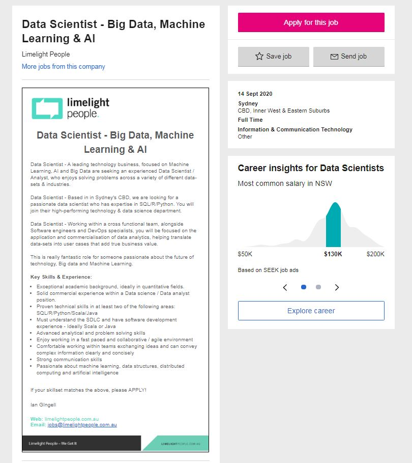

Ideal Job
Please see below a sample of my ideal job currently advertised on Seek.com.au.
The advertised position is almost a one to one match to my desired fields and interest area. In addition, the job will be focusing on the software that I am trying to learn and improve my knowledge.
The outlined responsibilities are also matching with the task I would love to work on in the future.
The advertisement on the website is looking for a data scientist who likes to solve problems for various industries which may have a different type of data-sets, enjoys working in a fast-paced environment,
an excellent team player with advanced communication skills and passionate about machine learning, data structures, distributed computing and artificial intelligence. The ideal scientist must have proven extensive knowledge of SQL or R or Python. In addition, knowledge on either Scala or Java is highly desirable
The candidate should have an exemplary academical record Mathematics / Engineering / IT/ Computer Science with prior commercial experience in the Data Science industry.
In addition, knowledge in Software Development Life Cycle, understanding the tasks performed through the steps in the software development process is crucial.[1]

Skills I need
To be qualified for this position, a degree in Information Technology with strong academical success is crucial. I also need to learn and become an expert on Python,
SQL, and Java. In addition, I need to build a solid commercial experience following my graduation from this degree.
Skills I have
I am highly experienced to work on the high passed environment which also requires advanced analytical and problem-solving skills. While designing development applications for residential development, I developed my commination skills to convey my design ideas to both clients and local authorities. I am a very good team player as well as a potential team leader who can work without supervision when needed. I currently finished an Introduction to programming course from RMIT, where I learned to write small programs and applications on Java. I also finished another online certificate program to strengthen my knowledge of Java.
In addition to my current enrolment in RMIT, I am also enrolled in other online courses through various educational programs to improve my knowledge in data science and machine learning. See the details of the current courses below (feel free to contact me for further details);
·Introduction to Computational Thinking and Data Science
·Introduction to Computer Science and Programming Using Python
·2020 Complete Python Bootcamp: From Zero to Hero in Python
·The Data Science Course 2020: Complete Data Science Bootcamp
Learning Plan
In addition to finishing my degree in Information Technology, I will be taking further courses to obtain certificates to be specialised in data science and artificial intelligence.
In addition, I will be working online project challenges to make my name familiar in the industry and to build my network.
I will be focusing on Phyton and Java as well as SQL to be able to achieve my ideal job.